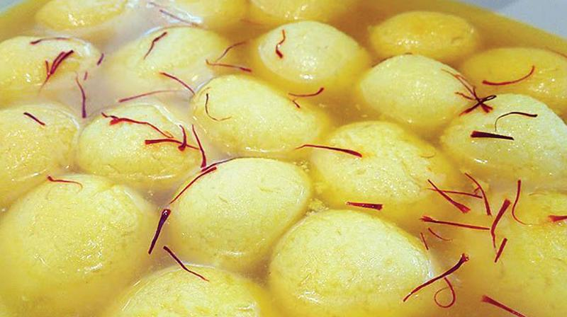
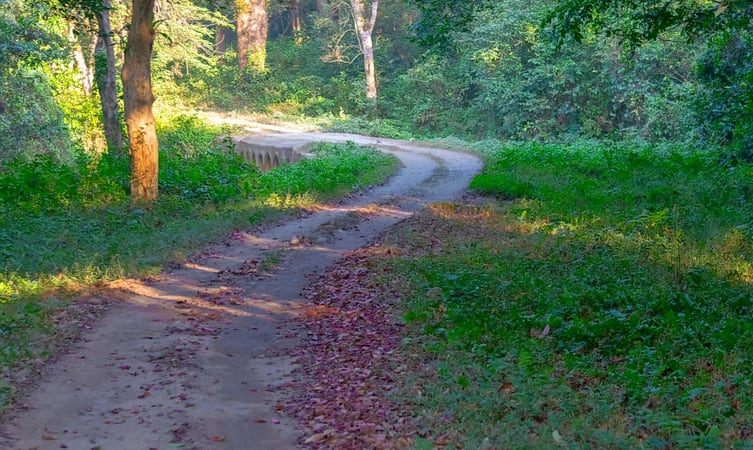
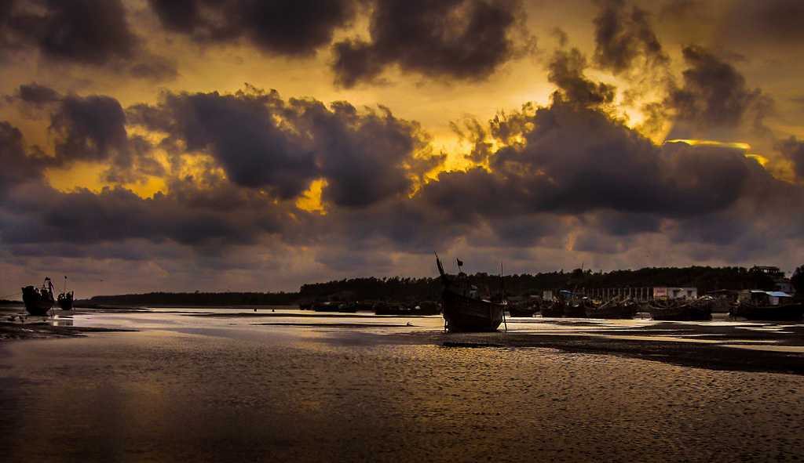
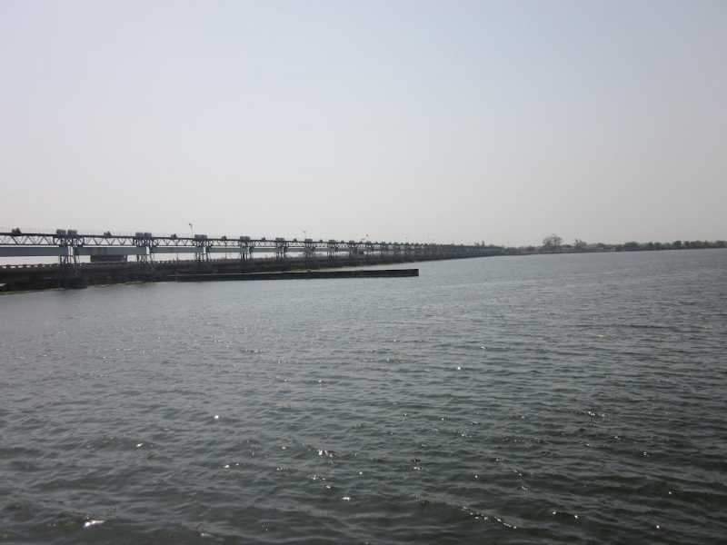

West Bengal
Unity in Diversity

Paschim Banga

Unity in Diversity
West Bengal, India- "Paschim Banga"
West Bengal is a state in eastern India, between the Himalayas and the Bay of Bengal. Its capital, Kolkata (formerly Calcutta), retains architectural and cultural remnants of its past as an East India Company trading post and capital of the British Raj. The city's colonial landmarks include the government buildings around B.B.D. Bagh Square, and the iconic Victoria Memorial, dedicated to Britain's queen.
Capital: Kolkata
Location: Eastern part of India on the Bay of Bengal
BEST TIME TO VISIT WEST BENGAL: October to mid April is the best time to visit West Bengal, with February, March and November particularly lovely in Darjeeling. Remember that the temperature differences between coastal Kolkata and the Himalayas can be huge.
WHY VISIT WEST BENGAL? You should plan a trip to West Bengal for its colonial era monuments, temples, hill stations, cuisine, beaches, wildlife, trekking, jungle safari, sightseeing, spirituality, Toy Train, arts & crafts, heritage and culture. West Bengal is famous for its terracotta temples of Bishnupur. Hazarduari Palace, a popular tourist attraction, is known to have the second largest chandelier in the world and also the largest staircase in India.
The amazing influence of regional music further increases the rich heritage of the region. Baul singing is perhaps the most famous of all the traditional singing of the yore. This involves singing a folk song about God, and one can see the powerful emotions that such type of singing evokes. The singer has his/ her eyes closed, completely lost in the moment- as if in a trance. There are other forms of folk singing too like Gombhira, Bhawaiya and kirtans etc. The region also has certain influences of the Indian Classical Music and Rabindrasangeet- made famous by the genius all rounder, Rabindranath Tagore is considered to be a contemporary music option. In short, West Bengal has quite a rich variety of music. Traditional dance forms like Chau originated in the state of West Bengal, where people wear huge colourful masks and dance.

Chhau Dance |

Tusu Dance |

Lathi Dance |

Baul songs |
Keertan |

Chau Jhumur |
Bengali women traditionally wear a sari, draping the 'pallu' in a special manner that is exclusive to the state of West Bengal. With modernisation, shalwar kameez have also become famous with the newer generation wearing jeans, dresses and skirts too. The men used to wear dhoti kurtas in olden times but now do so only during some special occasions like during festivals or marriages. Their style is basically fusion with putting on a kurta with jeans apart from the westernised shirt pants. This touch of westernization is especially visible in Kolkata more than in any other city of West Bengal.

Home to a variety of unique art forms, borne out of the diverse range of culture in Bengal, the state attracts art connoisseurs from all over the globe. From embroidery to sculpture, sketching to metal crafts, the art and craft culture of Bengal has a unique rustic and mystic charm about it. The most celebrated form of embroidery, Kantha is used on Saris, Dhotis, and Kurtas. The colourful and intrinsically created pieces of clothing are best used on Cotton and Silk and are widely used by foreigners and worn by natives alike.
The terracotta craft of Bengal offers a more rural and pastoral charm. A visual treat due to its natural colours, these clay modelled items first became a craze more than 500 years ago and are still used by locals and foreigners for decorative purposes. The art of engraving ornamental images on natural shells obtained from the ocean is known as Conch Shell Craft. Found and sold in infinite quantities at beach destinations, theseglamorous looking decorative pieces are extremely auspicious in Hindu mythology. Scroll Painting, a rare form of art that comes from regions of eastern India, particularly West Bengal, originated centuries back. An important device through which Oral and Written Epics are narrated; scroll paintings feature single image paintings or long vertical multi panelled scrolls known as Patachitra. Dokra Metal Craft is one of the most popular forms of art practiced in Bengal. This rare art is the practice of creating statues, idols, jewellery and other pieces with the help of clay, wax and molten metal. The unique feature of this craft is that it is completely original and no complete replica of it can be produced.
Bankura Horses made from terracotta is considered auspicious in West Bengal. They are used during Bengali festivals and can be found adorned in any Bengali household. Sholapith craft is a milky white sponge wood that is used for crafting decorative pieces. Sholapith is popularly used to craft head wears of bridal couples, garlands, and images of gods and goddesses especially as backdrops during important festivals.

Terracotta Craft |

Conch Shell Craft |

Scroll Paintings |
West Bengal has a long-standing tradition of folk drama known as Jatra. This form of theatre is a musical drama which depicts some story in a melodious manner even while acting it out on stage. It used to be one of the ways to spread the story of Lord Krishna to people. The dialogues are all dramatic monologues, and nowadays the play is usually preceded by a musical concert to attract the audiences.
West Bengal has its own film industry known as 'Tollywood' as it is based in the Tollygunge region of West Bengal. It has a long list of acclaimed filmmakers both nationally and globally, including the Academy Award-winning film director Satyajit Ray. Other famous contemporary filmmakers include Rituparno Ghosh, Aparna Sen, Nandita Roy etc.
Food- something that we cannot live without, and Bengalis sure know how to enjoy theirs! Rice is a staple, owing to the enormous plantations of rice all across the state. Roti, Vegetables with thick curry, fish, egg and meat form staples of everyday life. Fish is found in many different varieties, and Bengalis have many unique dishes devoted to the same such as Malai curry of Prawn Fish, patori, ilish mach etc. The sweets of West Bengal are also very famous with majority of them are made of milk and its subsidiaries. The most famous are rasogolla, sandesh, rasamalai, homemade pitha, etc. which are loved throughout the country. The modern day Bengali prefers to explore more, and so Anglo -Indian, Continental, Lebanese, Thai and Chinese are also preferred in addition to the traditional Bengali cuisines.

Malai curry of Prawn Fish |

Ilish mach |

Rasogolla |
West Bengal sees an array of festivals too, just like its other aspects. Durga Puja is the favourite festival of the region, witnessing crowd from all over the world. It is the celebration of celebrating the victory of Goddess Durga over the demon Mahishasura. The roads are overcrowded till the nine days that the festivities are on. This festival is a lavish affair for the Bengalis with elaborate tents (known as pandals) going up in different parts of the state and people buying new clothes and accessories exclusively for this time of the year. Other festivals like Kali Puja (which is celebrated during Diwali), Lakshmi Puja (celebrating in honor of the Indian Goddess of Wealth) etc. are celebrated throughout the year.

Durga Puja |

Kali Puja |

Lakshmi Puja |
The state of West Bengal, in the Eastern region of India, is home to a rich and bewildering variety of forests and wildlife Wing. From the famous Royal Bengal Tiger that stalks its prey with legendary cunningness in the Gangetic delta of famous Sundarbans, to the Great Indian One-horned Rhinoceros grazing in the Terai/ Dooars grassland, the leopards lurking in the foothills of the Himalayas and Red Panda resting in bamboo groves of Himalayas. The forests of this state has a rich assemblage of diverse habitats and vegetation designated with the help of eight different forest types. The diverse fauna and flora of West Bengal possess the combined characteristics of the Himalayan, sub-Himalayan and Gangetic plain. Diversity is further reflected in different types of ecosystems available here like mountain ecosystem of the north, forest ecosystem extending over the major part of the state, freshwater ecosystem, semiarid ecosystem in the western part, mangrove ecosystem in the south and coastal marine ecosystem along the shoreline. These diverse ecosystems have resulted in rich faunal diversity of the state and consists of 10,013 species out of a total of 89,451 species of animals present in our country, thus representing 11.19% of our country’s fauna. West Bengal has 4692 sq.km. of forests under Protected Area (PA) network which is 39.50% of the State’s recorded forest area.
With the Pakhi Bitan WLS Jalpaiguri District having an area of 14.09 sq.km, the latest notified WLS in the state, the total area under Protected Area has gone upto 4705.9362 sq.km (39.62% of Recorded Forest Area). The PA network includes 1502.8146 sq.km. in Sixteen Wild Life Sanctuaries, 1981.4817 sq.km. in six National Parks and the balance areas are being represented by buffer areas of the two Tiger Reserves, viz. Sundarbans Tiger Reserve and Buxa Tiger Reserve. There are two Elephant Reserves viz., Mayurjharna Elephant Reserve with an area of 414.00 Sq.km. and Eastern Dooars Elephant Reserve with an area of 977.51 Sq.km. In addition, there is one Biosphere Reserve viz. Sundarban Biosphere Reserve with an area of 9630 Sq.km. This includes the Sundarban Tiger Reserve, Lothian Island Wildlife Sanctuary, West Sundarban Wildlife Sanctuary and the Haliday Island Wildlife Sanctuary. In West Bengal emphasis has been given to conservation and management of sustainable resources in order to achieve the goal of long-term biodiversity conservation. The overall strategy involves protection of critical habitats of endangered species.
The Bengal wilderness is also home of an array of highly endangered species like the Asian Elephant , Great one horned Rhino, Gaur, Serow, Red Panda, Black Necked Crane, Great pied Hornbill, Goliath Heron, Estuarine Crocodile, Salvator Lizards, Olive Ridley Marine Turtle, rare Batagur terrapin, let alone being the habitat for most of the cats of India, e.g. Royal Bengal Tiger, Leopard, Clouded Leopard and Marbled Cat, Leopard Cat, Golden Cat, Jungle Cat and Fishing Cat representing the lesser cats.
Tiger Reserve and sanctuaries in West Bengal- West Bengal is a culmination of diverse cultures, history, and natural forms. From the Himalayas to the Ganges, West Bengal has several communities and forms a huge biosphere comprising rich flora and fauna. The northern part of the state has flourished into a major tourist spot because of the Shivalik and several tributaries of Ganga that flows through the state. Southern Bengal is especially famous for housing the world’s largest mangrove forest. To protect the rich biodiversity, the Government has to build many wildlife reserves, national parks, and sanctuaries in West Bengal. These national parks and wildlife sanctuaries in West Bengal are home to a large variety of animals, plants, trees, and birds.

Senchal Wildlife Sanctuary |

The Buxa Tiger Reserve |

Sajnekhali Wildlife Sanctuary |

Ramnabagan Wildlife Sanctuary |

Jore Pokhri Wildlife Sanctuary |

Sunderban National Park |
Lakes- West Bengal is a beautiful state of India that has hills, rivers and seas. This place is full of forests and natural beauty. It seems that god has created this state with full dedication. However if you are planning to come to this place you can find various types of lakes. The lakes in West Bengal are so beautiful that you will be moved with the beauty. It is for sure that you will have a lovely time while visiting the lakes. Each lake comes with some awesome beauty and looks.

Mirik Lake |

Senchal Lake |

Rabindrasarovar Lake |

Motijhil Lake |

Amarabati Lake |

Santragachhi Jheel |
Hill Stations- West Bengal is one of the famous Indian states located in the eastern part. This state has marvelous backdrop with a combination of incredible scenic charm. Will the spectacular aura of Himalayan range as a backdrop, the hills and valleys of West Bengal has given some of the really gorgeous hill stations. This stunning state is also a home to Sundarban mangroves which is the key feature and hence every year numerous tourists visit West Bengal’s attractions to explore the states hidden treasures. From populated cities with hustling lifestyle to quaint lush green villages, from bustling nightlife to pretty hill stations this state has it all. However, if you’re somebody who loves the picturesque aura of mountains and starlit sky then you should definitely explore Top Hill Stations in West Bengal. The gorgeous hill stations of West Bengal include some of the marvelous hill stations which can rejuvenate and refresh anyone.
|
Darjeeling |
Rimbik |

Kalimpong |
|
Kurseong |
Sandakpu |
Mirik |
|
Gangtok |
Takdah |

Dooars |
Beaches- West Bengal is famous for its rich Bengali culture, heritage, literature, and cuisines. One more thing for which it is gaining a lot of attention is the numerous holiday destinations in West Bengal. From verdant hills to serene beaches, you will get varied options to enjoy the natural splendor of West Bengal. Those who want to stay close to beautiful green hills and the misty weather choose North Bengal, and who are fond of beaches and water, choose South Bengal. If you fall into the second category, this piece will get you everything you need to know for your next vacation to this beautiful place.
|
Mandarmani |

Shankarpur |
Bakkhali |

Junput Beach |

Falta Beach |
Tajpur |
West Bengal stands third in the country in terms of mineral production. The state contributes about one-fifth of the total production of minerals in the country. Coal constitutes 99% of the minerals extracted in West Bengal; fireclay, china clay, limestone, copper, iron, wolfram, manganese and dolomite are mined in small quantities.[10] There are good possibilities of obtaining mineral oil and natural gas in the areas near the Bay of Bengal, in Purba Medinipur, Sundarbans, South 24 Parganas and North Bengal plains. Research is ongoing in various places to locate natural gas.
West Bengal is the third largest state for coal production, accounting for about half of India's total. Coal is extracted from about 228 mines in the Raniganj and Asansol region of Bardhaman district. High grade bituminous coal is mined at Raniganj, Dishergarh, Santaldih, Kulti, Barakar, Ghushik, Kajora. Coalfields stretch over an area of about 1,550 km2 (598 sq mi). The coalfields of Raniganj support the Asansol-Durgapur industrial belt by providing fuel to the industries as well as generation of thermal power. Lignite mined in Darjeeling is used to make briquettes. Coal deposits are also found along the Ajoy river in Birbhum district.
West Bengal ranks next to Bihar and Madhya Pradesh in production of fireclay. Most of this mineral is extracted in the Raniganj region along with a small quantity also extracted from Birbhum and Purulia. China clay used in the pottery, paper, textile, rubber and paint industries is unearthed at Mohammad Bazar in Birbhum and Mejia in Bankura. The rest of the production comes from Purulia, Bardhaman, Darjeeling and Jalpaiguri. In 1993–94 1.24 lakh metric tons of fireclay were produced in West Bengal.
Limestone, which is used in the cement industry, is mined in Bankura, Purulia, Darjeeling and Jalpaiguri. There are copper mines in Jalpaiguri and Darjeeling. Small quantities of low quality iron-ore are mined in Bardhaman, Purulia, Birbhum and Darjeeling. There is manganese in the Jhargram region of Paschim Medinipur, Purulia and Bardhaman. Wolfram is mined at Jhilimili in Bankura. The state's production of dolomite comes from the Dooars region of Jalpaiguri. 38.5 thousand tonnes of dolomite were raised in 1993–94.
West Bengal's climate varies from tropical savannah in the southern portions to humid subtropical in the north. The main seasons are summer, rainy season, a short autumn, and winter. While the summer in the delta region is noted for excessive humidity, the western highlands experience a dry summer like northern India, with daily high temperatures ranging from 38 °C (100 °F) to 45 °C (113 °F). At nights, a cool southerly breeze carries moisture from the Bay of Bengal. In early summer brief squalls and thunderstorms known as "kal-baisakhi" often arrive from the north or northwest. Monsoons bring rain to the whole state from June to September. West Bengal receives the Bay of Bengal branch of the Indian Ocean monsoon that moves in a northwest direction. Winter (December–January) is mild over the plains with average daily low temperatures of 15 °C (59 °F). A cold and dry northern wind blows in the winter, substantially lowering the humidity level. However, the Darjeeling Himalayan Hill region experiences a harsh winter, with occasional snowfall at places.
| Northern West Bengal Temperature | ||
|---|---|---|
|
|
|
|
| Southern West Bengal Temperature | ||
|
|
|
|
Interaction with the educated crowd of Bengal wouldn't be an issue if you are well versed in either Hindi or English. However, in order to avoid communication hassles with people like rickshaw-pullers and auto-drivers, it would be advisable for you to learn a few important phrases in the language. Other than Bengali, you can also get to listen to Nepali, Bhutiya and Oriya in West Bengal, used by the people who have migrated from these places. If you move more towards the tribal regions, you will get to listen to several tribal dialects and languages, like Santhali, used exclusively by the tribal-sects.
Interestingly, you can also listen to Chinese and Burmese in West Bengal. People from these countries, who settled in the state long back, are the ones who still use their mother tongue, though mainly amongst themselves only. Though a number of languages are spoken in West Bengal, the major one is Bengali only. Even those who hail from other states or countries use it for frequent interaction. The popular newspapers of the state are also Bengali-dailies only. Just pack your bags, with a hand-book of Bengali thrown in, and you are certainly going to have utmost fun on your trip to West Bengal.
Bengali, the main language of the state, is spoken by much of the population. Other languages include Hindi, Santali, Urdu (primarily the language of Muslims), and Nepali (spoken largely in the area of Darjiling).
From the majestic Himalayas to the serenity of the Gangetic plains, from quiet seashores to beautiful mangroves, West Bengal is a place with numerous natural wonders. Adding to its appeal, are the vivid festivities, sublime architecture, delightful crafts, classical and contemporary music, and scrumptious ethnic delicacies, that make West Bengal a splendid place offering extraordinary experiences. Regardless of whether you wish to be among scholars and meandering minstrels, or gutsy and choose to roam with rhinoceroses, these assorted West Bengal tourist places offer everything. West Bengal gives one a thousand reasons to stay and traverse the state’s nook and cranny. Have a look at the best places to visit in West Bengal.

Kolkata- City Of Joy |
Haldia- Most Culturally Inclined |

Digha- Unspoiled Beach Town |
|
Dooars- Gateway To Bhutan |
Murshidabad- Ancient Vibes |
Navadvipa- Land Of Temples |
|

Durgapur- Steel Capital |
Siliguri- Gateway To North East |
Raichak- Beautiful Riverside |
|
Bakkhali- Not A Regular Beach Town |
Bankura- A Family Escape |
Bishnupur- Land Of Terracotta Temples |
The history of West Bengal is long. From the north to south of the state, the cultural heritage of West Bengal deserves immense study. From the snow-capped peaks visible from Darjeeling to Indo-Islamic architecture, terracotta temples to the modern city of Kolkata where the past is intertwined, West Bengal has a lot to offer.

Darjeeling Himalayan Railway |
Santiniketan |

Victoria Memorial |
|
Sagardighi |

Firoz Minar |

Jora Masjid |

Chandan Nagar Museum |

Diamond Harbour |

Dakhil Darwaza |
|
Rasmancha |

Lalji Temple |

The F fort |